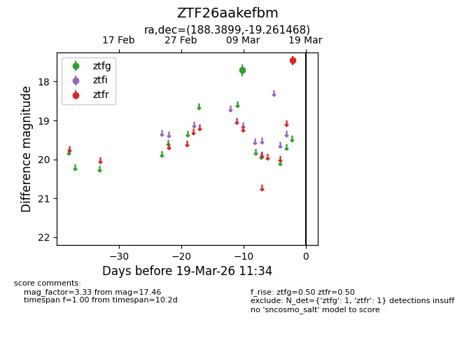
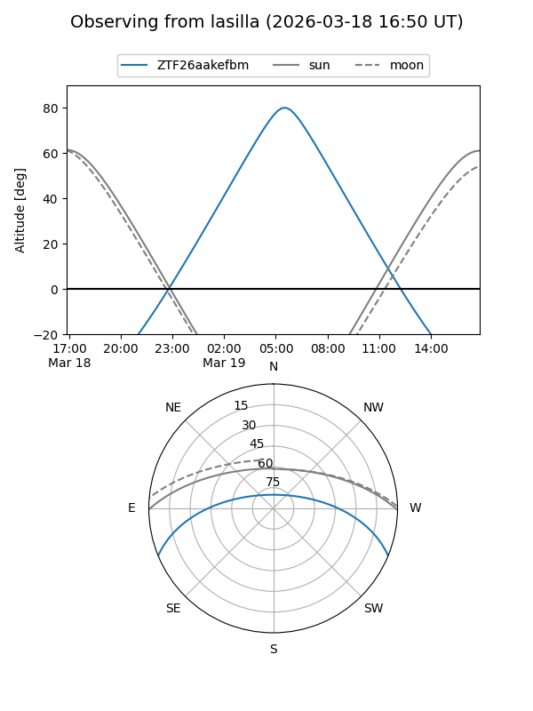
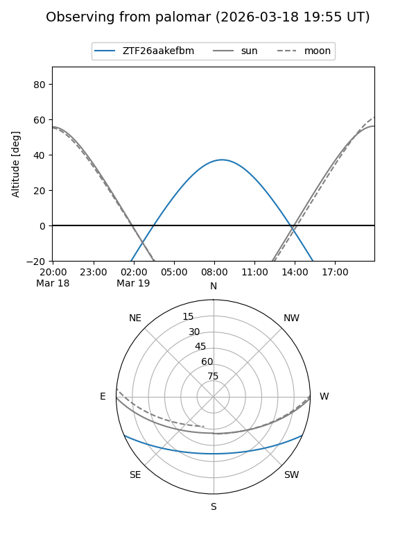

ZTF26aakefbm
Target ZTF26aakefbm at 2026-03-19 11:36
Aliases and brokers:
FINK: link
Lasair: link
ALeRCE: link
alt names
ZTF26aakefbm (ztf,fink_ztf)
Coordinates:
equatorial (ra, dec) = 188.3899,-19.26147
equatorial (HMS+DMS) = 12:33:33.58,-19:15:41.29
galactic (l, b) = (297.1198,+43.40843)
Flags:
Photometry:
last ztfg=17.71, ztfr=17.46
1 ztfg, 1 ztfr detections
Lightcurve

Visibility


Additional plots